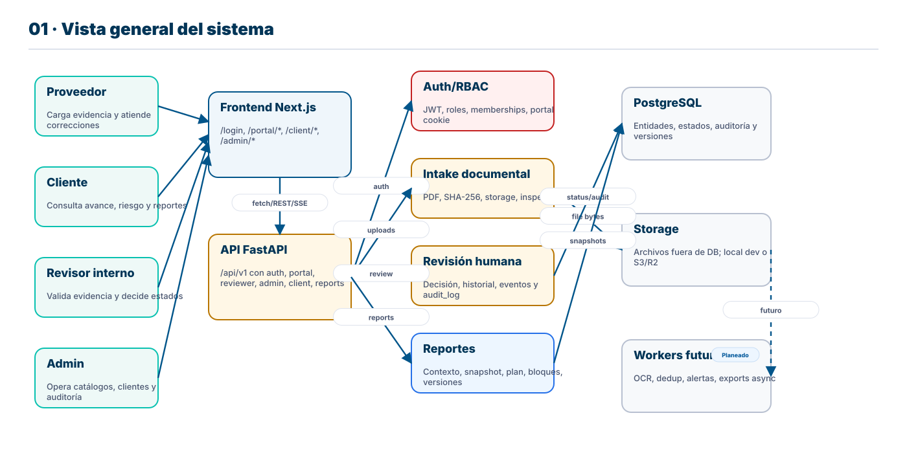
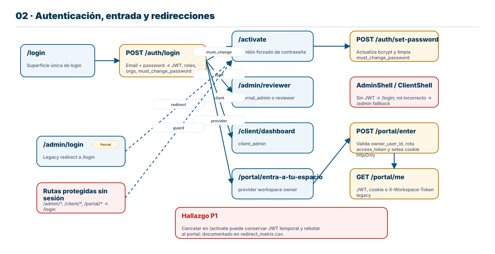
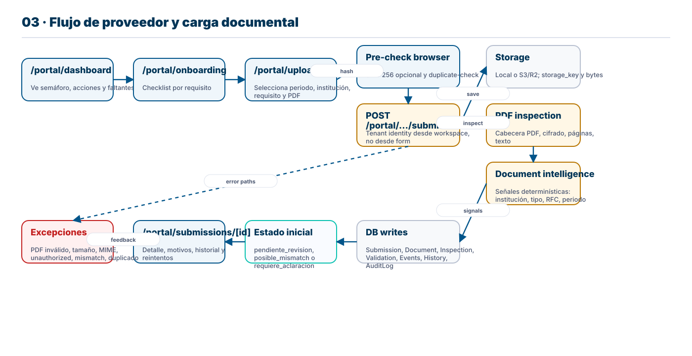
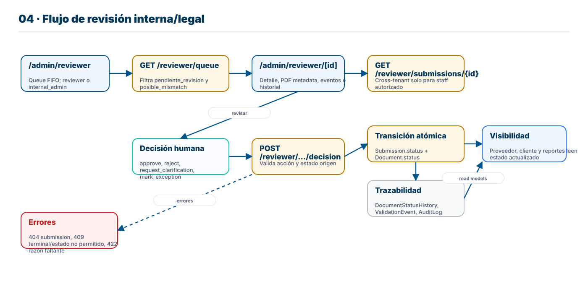
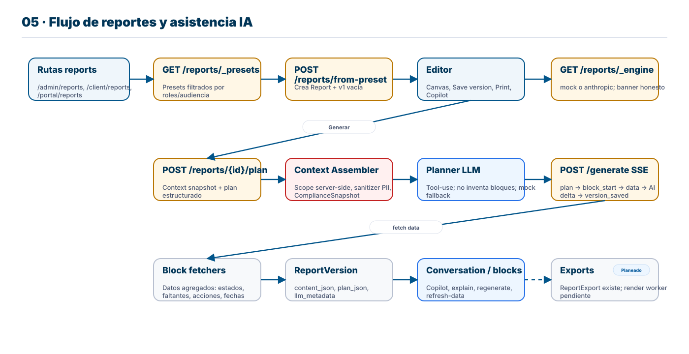
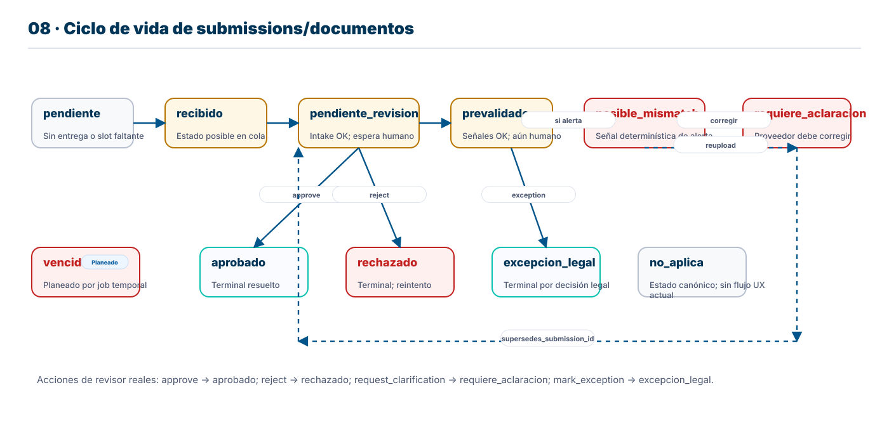
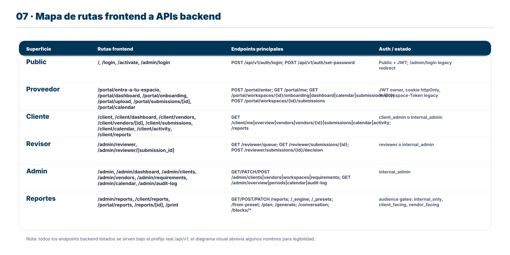
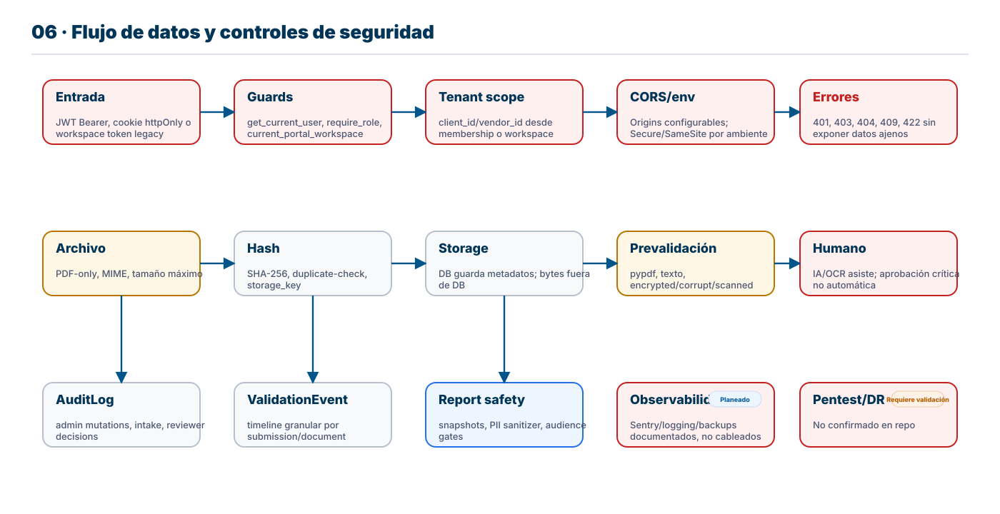

Flujos, rutas, redirecciones, APIs, estados documentales y controles de seguridad.
Referencia técnica imprimible para entender cómo CheckWise mueve evidencia REPSE desde proveedor hasta revisión, reporte y auditoría.
Basado en archivos reales del repo: frontend/app, backend/app, docs/API_CONTRACT_MAP.md, docs/DATA_MODEL.md, auditorías de rutas y reportes.
No es marketing. Cuando algo no está completo se etiqueta como parcial, planeado, faltante o por validar.
Cada flecha representa una transición accionable: una navegación frontend, una llamada HTTP, un write en base de datos, una validación o un redirect. Los nombres técnicos se mantienen en su forma original.
Implementado existe en código y está conectado.
Parcial existe con limitaciones, mocks o casos no cerrados.
Planeado hay modelo, documento o esqueleto técnico, pero falta ejecución.
/portal/upload es la ruta visible. POST /api/v1/portal/workspaces/{id}/submissions es el backend que procesa el upload. El PDF conserva los nombres exactos.
Si algo aparece en documentación pero no en código, se marca como documentado/no completo. Si el código existe pero requiere staging, se marca por validar.
El producto opera tres rutas principales: proveedor, cliente y equipo interno. El backend mantiene la verdad documental: estados, eventos, hashes, inspección PDF, auditoría y reportes.

CheckWise centralizó login en /login. Staff y clientes usan JWT con roles; proveedor entra al portal mediante workspace propio y cookie httpOnly. El token legacy de workspace todavía existe como transición.

/admin/reviewer, client_admin → /client/dashboard, provider → /portal/entra-a-tu-espacio, must_change_password → /activate./activate cancelar puede conservar JWT temporal; documentado como FAIL/P1 en redirect_matrix.csv.La ruta segura de upload deriva identidad desde ProviderWorkspace. El navegador no decide cliente/proveedor/contrato; el backend lo resuelve desde la sesión.

La revisión crítica es humana. Las señales automáticas ayudan a priorizar, pero la aprobación no se automatiza. Cada decisión escribe estado, historial, evento y auditoría.

Reportes no es solo exportar. El sistema crea reportes versionados desde scopes autorizados, snapshots de cumplimiento y bloques renderizados. La IA puede planear y redactar, pero el backend filtra datos y audiencias.

CRUD de reportes, presets, versiones, planner, generate SSE, conversation, explain/regenerate/refresh-data.
Si no hay ANTHROPIC_API_KEY, usa DeterministicMockLLMClient. El editor muestra banner via /_engine.
Exports asíncronos existen en modelo, pero el worker de render todavía está planeado. Provider reports tiene bloqueo 403 en DB actual según auditoría.

Client → Vendor → Contract → ProviderWorkspace definen identidad y alcance.
Period, Institution, Requirement, RequirementVersion definen el marco regulatorio versionado.
Submission une cliente, proveedor, contrato, periodo, institución, requisito, estado y lineage.
Document guarda metadata del archivo: storage_key, sha256, MIME, tamaño y ocr_status.
Validation, ValidationEvent, DocumentInspection, DocumentStatusHistory y AuditLog dan trazabilidad.
Report, ReportVersion, ReportConversation, ComplianceSnapshot, ReportShare, ReportExport soportan reporting versionado.
Mapa comprimido por superficie. La tabla completa de rutas aparece en la siguiente página para trazabilidad operativa.

| Ruta frontend | Propósito | Endpoint(s) backend | Auth/rol | Estado |
|---|---|---|---|---|
| / | Marketing/home | Sin API crítica | public | Implementado |
| /login | Login único | POST /api/v1/auth/login | public | Implementado |
| /activate | Cambio forzado de password | POST /api/v1/auth/set-password | JWT temporal | Parcial |
| /admin/login | Legacy redirect | redirect a /login | public | Parcial |
| /portal/entra-a-tu-espacio | Confirmación de workspace | POST /api/v1/portal/enter; GET /portal/me | provider owner | Implementado |
| /portal/dashboard | Dashboard proveedor | GET /api/v1/portal/workspaces/{id}/dashboard | portal session | Implementado |
| /portal/onboarding | Checklist proveedor | GET /api/v1/portal/workspaces/{id}/onboarding; POST complete-onboarding | portal session | Implementado |
| /portal/upload | Carga guiada | GET /api/v1/compliance/catalog; GET /api/v1/portal/workspaces/{id}/duplicate-check; POST /api/v1/portal/workspaces/{id}/submissions | portal session | Implementado |
| /portal/submissions/[submission_id] | Detalle de entrega | GET /api/v1/portal/workspaces/{id}/submissions/{submission_id} | portal session | Implementado |
| /portal/calendar | Calendario proveedor | GET /api/v1/portal/workspaces/{id}/calendar | portal session | Implementado |
| /portal/reports | Reportes proveedor | GET /api/v1/reports; GET /api/v1/reports/_presets; POST /api/v1/reports/from-preset | vendor_facing | Parcial |
| /portal/reports/[id] | Editor reporte proveedor | GET/PATCH/POST /api/v1/reports/* | vendor_facing | Parcial |
| /portal/reports/[id]/print | Vista imprimible proveedor | GET /api/v1/reports/{report_id} | vendor_facing | Parcial |
| /client | Redirect cliente | redirect a /client/dashboard | client_admin | Implementado |
| /client/dashboard | Dashboard cliente | GET /api/v1/client/overview | client_admin/internal_admin | Implementado |
| /client/vendors | Proveedores cliente | GET /api/v1/client/vendors | client_admin/internal_admin | Implementado |
| /client/vendors/[vendor_id] | Detalle proveedor | GET /api/v1/client/vendors/{vendor_id} | client_admin/internal_admin | Implementado |
| /client/submissions | Entregas cliente | GET /api/v1/client/submissions | client_admin/internal_admin | Implementado |
| /client/calendar | Calendario cliente | GET /api/v1/client/calendar | client_admin/internal_admin | Implementado |
| /client/activity | Actividad cliente | GET /api/v1/client/activity | client_admin/internal_admin | Implementado |
| /client/reports | Reportes cliente | GET /api/v1/reports; POST /api/v1/reports/from-preset | client_facing | Implementado |
| /client/reports/[id] | Editor reporte cliente | GET/PATCH/POST /api/v1/reports/* | client_facing | Implementado |
| Ruta frontend | Propósito | Endpoint(s) backend | Auth/rol | Estado |
|---|---|---|---|---|
| /admin | Landing interna | GET /api/v1/auth/me; navegación admin | staff | Implementado |
| /admin/dashboard | Dashboard admin | GET /api/v1/admin/overview | internal_admin | Implementado |
| /admin/reviewer | Queue revisión | GET /api/v1/reviewer/queue | reviewer/internal_admin | Implementado |
| /admin/reviewer/[submission_id] | Detalle revisión | GET /api/v1/reviewer/submissions/{id}; POST /api/v1/reviewer/submissions/{id}/decision | reviewer/internal_admin | Implementado |
| /admin/clients | Clientes | GET/POST/PATCH /api/v1/admin/clients | internal_admin | Implementado |
| /admin/vendors | Proveedores | GET/POST/PATCH /api/v1/admin/vendors | internal_admin | Implementado |
| /admin/requirements | Catálogo requisitos | GET/POST/PATCH /api/v1/admin/requirements | internal_admin | Implementado |
| /admin/calendar | Calendario admin | GET /api/v1/admin/calendar; GET /api/v1/admin/periods | internal_admin | Implementado |
| /admin/audit-log | Bitácora | GET /api/v1/admin/audit-log | internal_admin | Implementado |
| /admin/reports | Reportes internos | GET /api/v1/reports; GET /api/v1/reports/_presets; POST /api/v1/reports/from-preset | internal/reviewer | Implementado |
| /admin/reports/[id] | Editor reporte interno | GET/PATCH/POST /api/v1/reports/* | internal/reviewer | Implementado |
Los controles existen por capas: entrada, scope, archivo, storage, auditoría y reportes. Algunos ya son código operativo; otros requieren validación productiva.

JWT HS256, bcrypt, roles/memberships, CORS configurable, PDF-only, size cap, SHA-256, AuditLog, ValidationEvent, tenant-safe workspace upload.
S3/R2 soportado por storage.py, pero necesita bucket, secrets, backup/restore y smoke tests reales.
Pentest externo, observabilidad, descarga segura de documentos, membership editor, correcciones backend, notificaciones y DR.
| Área | Estado | Evidencia del repo | Riesgo | Siguiente acción recomendada |
|---|---|---|---|---|
| Frontend routes | Implementado | frontend/app/**/page.tsx; route_inventory.csv | Algunas rutas reportes proveedor bloqueadas por datos/DB | Cerrar provider reports y activar pruebas con ids propios |
| Backend APIs | Implementado | backend/app/api/v1/*.py; API_CONTRACT_MAP.md | Superficie amplia; no endpoint de descarga de documentos | Agregar descarga segura/presigned URL con RBAC |
| Upload workflow | Implementado | portal.py create_workspace_submission; submission_service.py | Legacy /submissions aún existe y confía identidad de formulario | Mantener solo para importer/dev; migrar wizard a catálogo workspace-scoped |
| Reports | Parcial | reports.py, report_service.py, executor.py, REPORTS_AUDIT_2026-05-18.md | Mock LLM si no hay ANTHROPIC_API_KEY; exports async pendientes | Configurar AI real, completar export worker y provider report creation |
| Auth/security | Parcial | auth.py, portal_session.py, config.py | Activation cancel bug; portal token legacy; producción no validada | Fix /activate cancel, retirar legacy token gradualmente, hardening prod |
| Database/migrations | Implementado | alembic/versions/0001-0009; models/entities.py | Faltan tablas futuras de sharing/export worker completas según docs | Aplicar/validar migraciones en staging |
| Document storage | Parcial | storage.py; .env.example | S3/R2 soportado en código, requiere credenciales y prueba de operación | Configurar bucket, TTL, backups y pruebas de restore |
| AI/LLM | Parcial | llm/factory.py; planner.py; executor.py | Asistente, no autoridad legal; fallback mock puede confundir si no se mira banner | Definir policy de uso, logs y evaluación de calidad |
| Deployment config | Requiere validación | render.yaml; .env.example; PROD_AUDIT_2026-05-18.md | Secrets, CORS, storage, observabilidad y backups requieren staging real | Checklist prod + smoke tests end-to-end |
| Design system | Implementado | globals.css; docs/DESIGN_SYSTEM.md; brand assets | Algunas pantallas aún pueden requerir pulido UX | Continuar redesign guiado por datos reales |
| Testing | Implementado | backend/tests; QA_RESULTS.md | No se corrieron tests en este build documental; frontend E2E limitado a auditorías previas | Añadir Playwright E2E para rutas críticas |
Referencia rápida para imprimir: usuario → ruta → API → dato → estado → reporte → seguridad.
Proveedor entra por /login → /portal/entra-a-tu-espacio → dashboard/onboarding → upload → backend guarda PDF y metadata → revisión humana → estado visible para portal/cliente/reportes.
/activate cancel/JWT temporal.